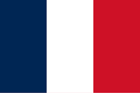

França
França (em francês: France; pronúncia em francês: [fʁɑ̃s] (escutarⓘ)), oficialmente República Francesa (em francês: République française; [ʁepyblik fʁɑ̃sɛz]), é um país, ou, mais especificamente, um Estado unitário localizado na Europa Ocidental, com várias ilhas e territórios ultramarinos noutros continentes. A França Metropolitana estende-se do Mediterrâneo ao Canal da Mancha e Mar do Norte, e do rio Reno ao Oceano Atlântico. É muitas vezes referida como L'Hexagone ("O Hexágono") por causa da forma geométrica do seu território e partilha fronteiras com a Bélgica e Luxemburgo a norte; Alemanha a nordeste; Suíça e Itália a leste; Espanha ao sul e com os microestados de Mônaco e Andorra. A nação é o maior país da União Europeia em área e o terceiro maior da Europa, atrás apenas da Rússia e da Ucrânia (incluindo seus territórios ultramarinos, como a Guiana Francesa, o país torna-se maior que o território ucraniano).